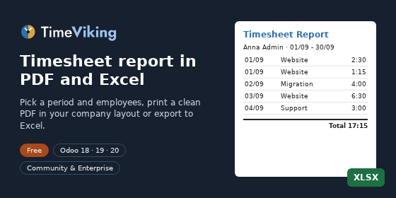
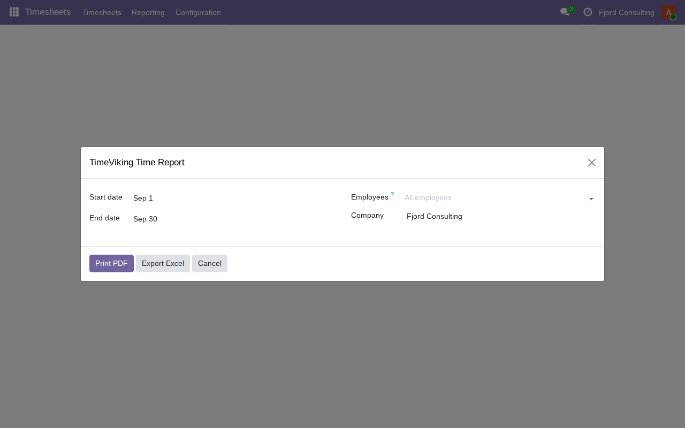
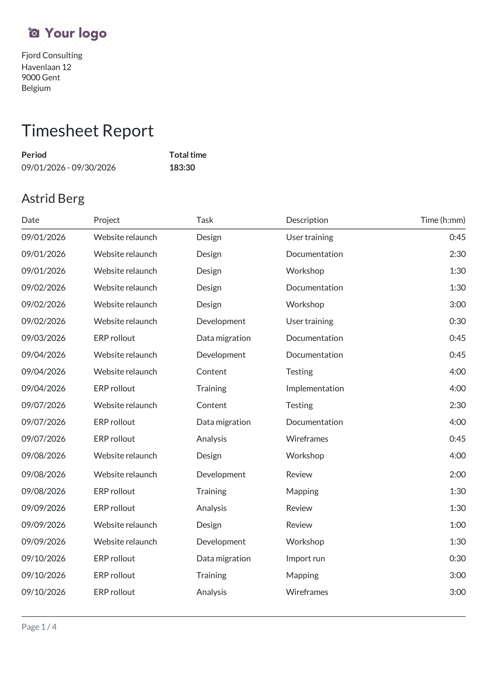
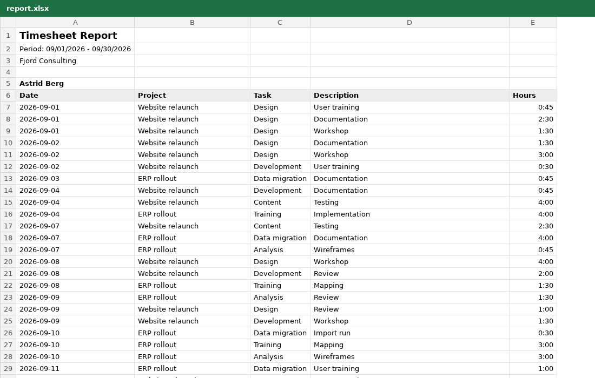

Pick a period and one or more employees, then print a clean PDF in your company document layout or download an Excel file. Works on Odoo Community and Enterprise with only the Timesheets app.
Timesheets > Reporting > TimeViking Time Report, or Print on an employee.

One block per employee with date, project, task, description and time, a total per employee and overall.

Real dates and durations (h:mm) that add up, ready for filtering and pivots.

Timesheet PDF Report Pro (Software Services BV) adds sections per project or customer, grouping by day, project or task, subtotals, a project summary, signature boxes and timesheets attached to customer invoices.
TimeViking (timeviking.com) is fast weekly and mobile time entry for Odoo Timesheets: calendar, grid, timer and quick entry, synced both ways.
Free, LGPL-3. Questions: support@timeviking.com